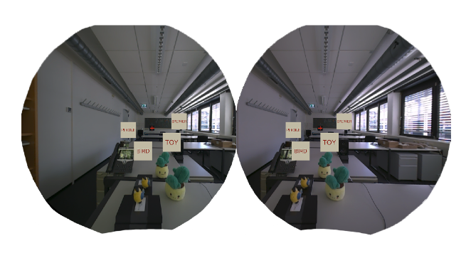
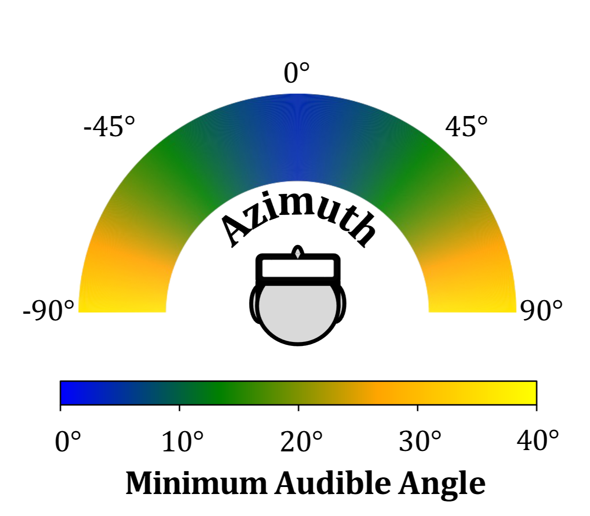
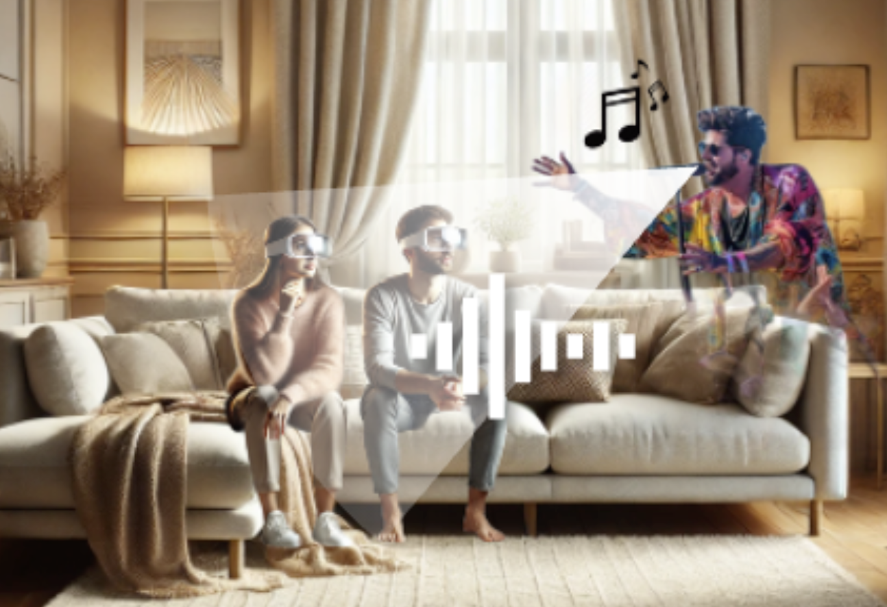
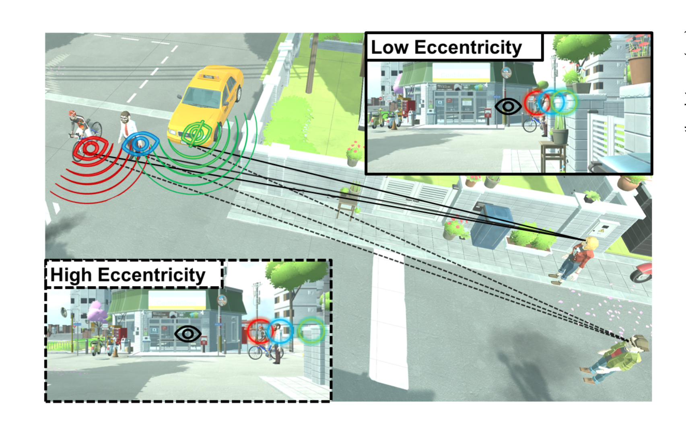
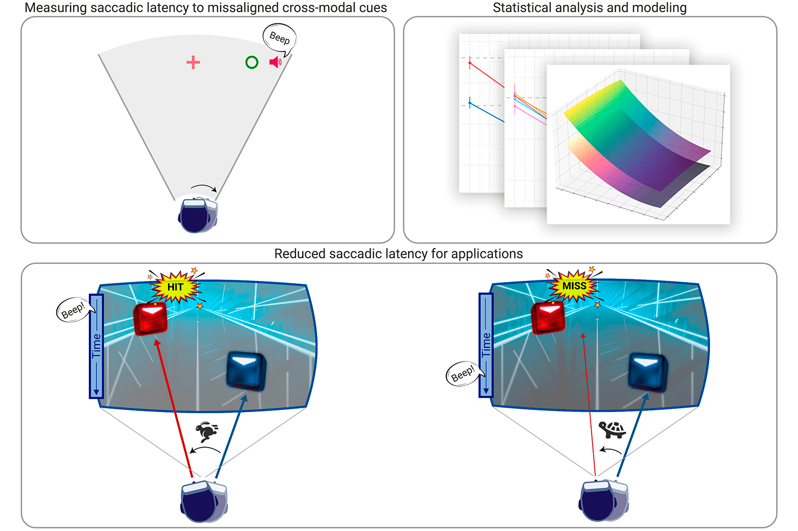
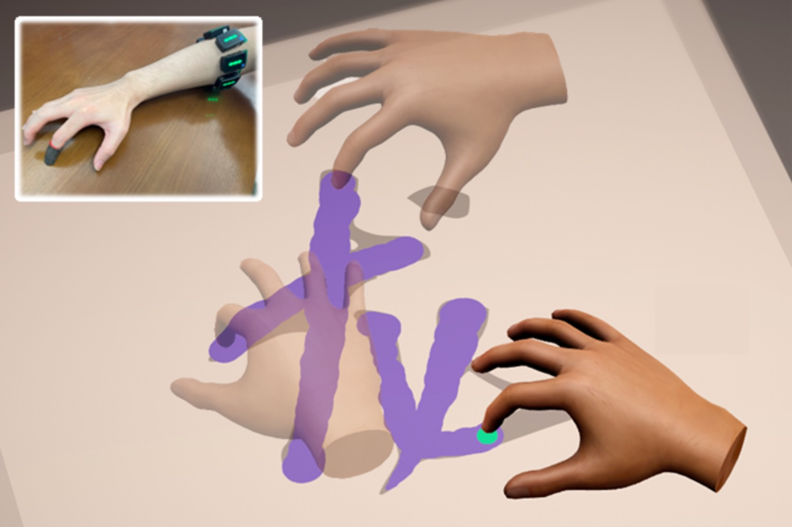

Overdriving Visual Depth Perception via Sound Modulation in VR
TVCG
Ph.D. student at UNC Chapel Hill, advised by Prof. Praneeth Chakravarthula. M.S. at NYU with Prof. Qi Sun at the Immersive Computing Lab.
VR/AR, perceptual computer graphics, computational imaging, and machine learning.


TVCG



TVCG IEEE VR Best Paper Honorable Mention




Conference reviewer SIGGRAPH, ISMAR